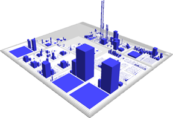
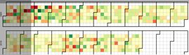
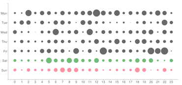
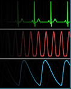
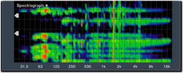
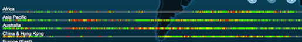
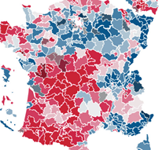
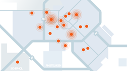

Ebauche. Analytica est en cours de développement, cette page sera complétée prochainement.
Destiné à des utilisateurs non techniques : Responsable fonctionnel, Chef de projet.
Conçu avec une volonté de :
Simplicité
- prise en main rapide
- ergonomie adaptée
Lisibilité
- très visuel
- différents niveaux de lecture
Souplesse
- rapide à mettre en place, faible coût d'intégration
- adaptable aux spécificités projets
Monitoring centralisé
Suivre et controler l'évolution d'indicateurs
- Activité
- Temps de réponse
- Taux d'erreurs
- …
Consulter les évènements de l'application
- Actions utilisateurs
- Agents programmés
Alertes
Déclenchées sur
- Dépassement de sueil
- Hystérésis
- Evènement particulier
Notifiées sur
- Tableaux de bord
- Envoi de mails
Diagnostic
Consulter les caractéristiques du système
- Caractéristiques physiques
- Paramètres et configurations
Lancer des fonctions de contrôle sur
- La disponibilité de composant tiers (LDAP, services web, …)
- Les cohérences de données
Rapport d'activité
Orienté
- qualité de service
- statistiques d'usages
Fabriqué
- à la demande
- régulièrement
Choix des indicateurs
- Déterminer des objectifs du suivi applicatif (QOS, activité, arbitrage, …)
- Dériver les objectifs en indicateurs et seuils associés
- Proposer une représentation adaptée
Exemples
Etat de l'application
- Activité : nb d'utilisateurs, nb objets métiers, pages vues, traitements réalisés, …
- Performances : nb de page respectant les objectifs de performance
- Santé : taux d'erreurs technique, état des sous systèmes, charge CPU/Mémoire
Analytica est diffusé sous licence AGPLv3.
Voir le texte de la licence ici
Certaines briques d'Analytica ont vocation à être liées à une application (client-api, client-embedded).
La licence de ses briques prévoit une exception de ''liaison'' autorisant l'utilisation de ces librairies clientes d'Analytica dans votre application quel que soit son mode de licence.
Pour information voici une traduction des possibilités et limitations offerte par la licence. Sur la base du site TL;DR Legal (TL;DR : Too Long; Didn't Read)
-
 Usage commercial limité
Usage commercial limité
Ce programme peut être utilisé dans un cadre commercial dans travaux dérivés sous certains limitations.
-
 Modification
Modification
Ce programme peut être modifié.
-
 Distribution
Distribution
Ce programme peut être distribué.
-
 Garantie
Garantie
Vous pouvez garantir ce programme.
-
Inclure le Copyright
Vous devez inclure le copyright d'origine.
-
Inclure la license
Vous devez inclure le texte complet de la licence dans le programme modifié.
-
Lister les changements
Vous devez lister les modifications majeurs apportées au programme.
-
 Diffuser les sources
Diffuser les sources
Vous devez rendre les sources accessibles lorsque vous distribuez le programme.
Installation serveur Analytica
Le serveur Analytica est un composant central de votre SI, il est installé sur un serveur dédié ou non.
Prérequis: Java 1.7 installé, 2 Go de RAM disponible.
- Télécharger l'éxécutable AnalyticaServer-v1.0.jar
- Télécharger la configuration analyticaConf.properties
- Déposer ces deux fichiers dans un même répertoire
- Sous Linux vérifier les droits d'accès et d'exécution
- Créer un répertoire de stockage de la base de données des indicateurs récoltés
- Editer le fichier "analyticaConf.properties" et modifier le chemin de stockage des process
- Lancer le serveur analytica :
java -jar -Xmx2048m AnalyticaServer-v1.0.jar analyticaConf.properties 1> analytica.log 2>&1 &
Celle-ci, permettra le lancement du serveur et rassemblera les éventuelles erreurs rencontrées dans le fichier de log analytica.log.
Installation de l'agent Analytica
L'agent Analytica est le composant intégré à l'application qui récolte les indicateurs.
Analytica propose différent agents afin de s'adapter au maximum de cas.
- Intégration automatique dans votre application
- Librairie cliente à intégrer dans votre application
- Analyse des logs en asynchrone
Intégration automatique
- Télécharger l'éxécutable AnalyticaAgent-1.4.2.jar
- Télécharger la configuration analyticaAgentConf.json
- Déposer ces deux fichiers dans un même répertoire
- Sous Linux vérifier les droits d'accès et d'exécution
- Modifier le fichier "run.conf" situé dans le répertoire bin de jboss (
$JBOSSHOME/bin)
Ajouter à la fin du fichier :
#Run AnalyticaSpyAgent
JAVA_OPTS="$JAVA_OPTS -javaagent:analyticaAgent-1.4.2.jar=analyticaAgentConf.json"
Librairie cliente
- Récupérer le bundle analytica-client-1.1.0-SNAPSHOT.zip
Analyse des logs en asynchrone
- Télécharger l'éxécutable analyticaLogParser-1.3.1.jar
- Télécharger la configuration analyticaLogParserConf.json
- Déposer ces deux fichiers dans un même répertoire
- Sous Linux vérifier les droits d'accès et d'exécution
- Vérifier la configuration du parseur "analyticaLogParserConf.json"
- Lancer le parseur de log :
java -jar analyticaLogParser-1.3.1.jar "<<URL_ANALYTICA>>/analytica/rest/process" analyticaLogParserConf.json <<LOGFILE_PATH>>
Analytica est en cours de développement.
Voici les milestones prévues :
En parallèlle d'autres composants graphiques pourrait être ajoutées :








‹
›
D'autres indicateurs à étudier :
- Corrélation de dégradation de performance
- Comparaisons entre deux périodes
- Suivi des configurations applicatives
- Analyse automatique des tunnels de normalité
- Détection des saturations (notion de retard cumulé)